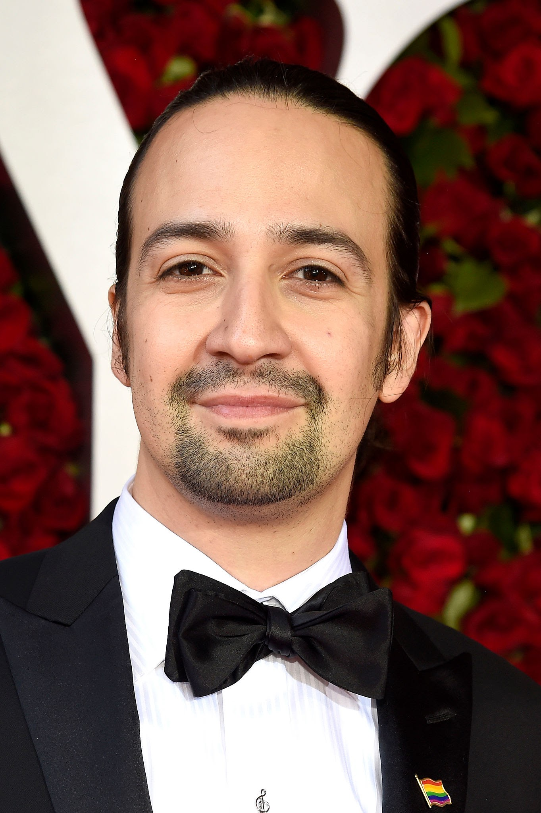
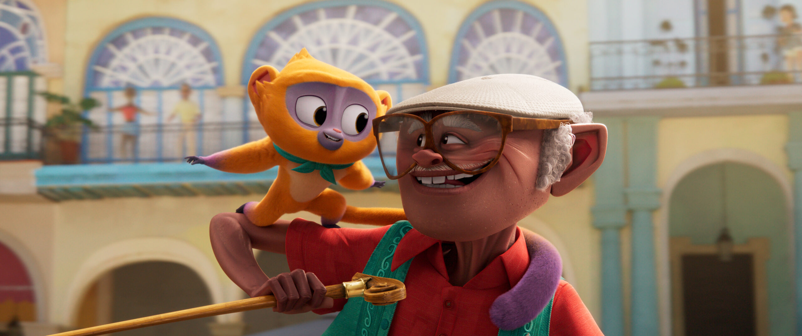
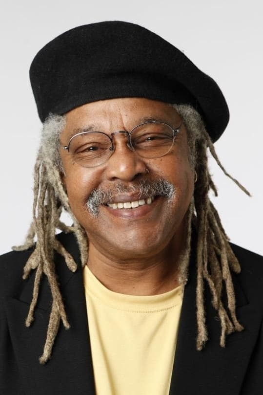
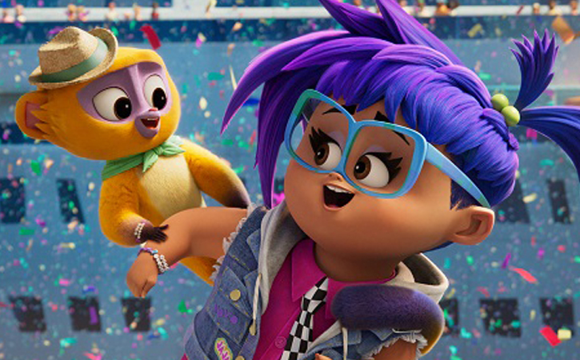
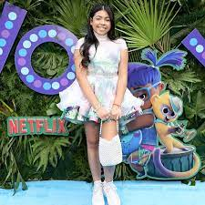
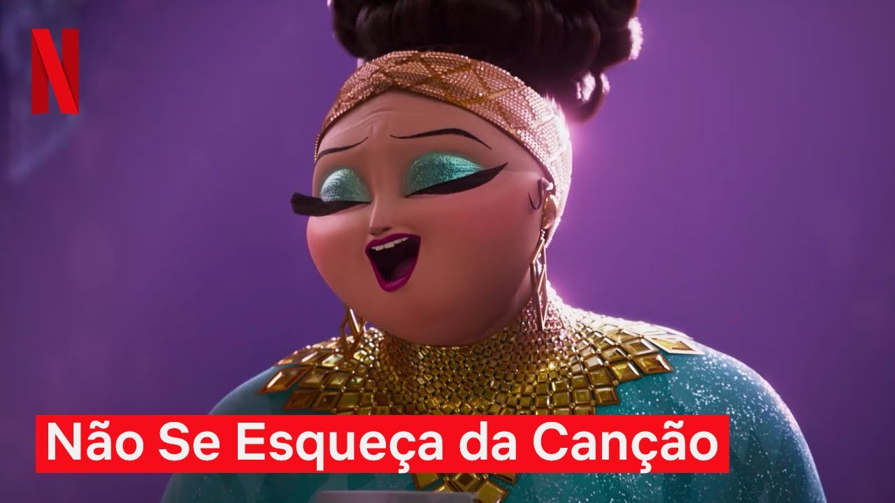
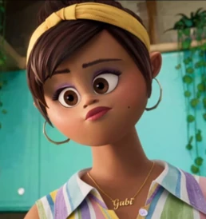
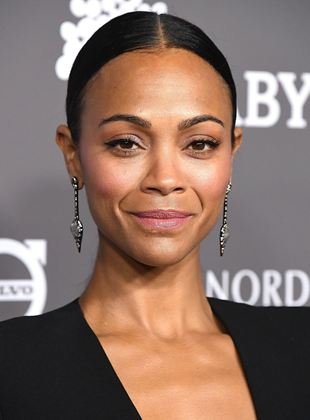

Vivo é o personagem título, é um jurupará muito apaixonado por música. Ele foi retirado se seu ambiente natural para ser vendido ilegalmente. Mas teve a sorte de cair do caminhão e encontra Andrés, sendo assim seu parceiro de música.

Canções e dublagem de Vivo: Lin-Manuel Miranda
Lin-Manuel Miranda, nasceu em Nova Iorque em 16 de Janeiro de 1980. Ele é ator, compositor, dramaturgico, cantor, produtor e letrerista norte-americano conhecido por escrever e estrelar musicais.
Lin dublou vivo e as canções do filme ele compôs.

Andrés
Andrés encontrou Vivo em cima de um pé de coqueiro, Vivo não queria descer pois tinha muito medo. Andrés começou a tocar e cantar e Vivo desceu. Viraram grandes parceiros na música.

Dublador orginal de Andrés: Juan de Marcos González
Juan de Marcos González é um líder de banda, músico e ator cubano, mais conhecido por seu trabalho com o Buena Vista Social Club e no filme de animação de Vivo. Ele fala russo, inglês e espanhol e tem algum conhecimento de lucumi e abacua. Nasceu em Janeiro de 1954.

Gabi Hernandéz
Amiga de viagem de vivo, ela queria muito ter ele como bichinho de estimação, mas vivo tinha medo dela.
Gabi ajudou vivo a chegar no show de Marta e entregar a carta

Dubladora orginal de Gabi:Ynairaly Simo
Ynaiy nasceu em Nova Iorque e atua como atriz.

Marta Sandoval antigo amor de Andrés
Marta cantava com Andrés em shows, ele a amava mas não sabia como dizer, ela foi embora seguir a carreira dela e Andres não conseguu dizer que a amava, por medo dela não seguir sua carreira.
Dubladora orginal de Marta Sandoval:Glória Estevan
Gloria Estefan, nome artístico de Gloria Maria Milagrosa Fajardo García, é uma cantora cubana radicada nos Estados Unidos. Ela começou sua carreira como vocalista do grupo Miami Latin Boys, que mais tarde ficou conhecido como Miami Sound Machine. Nasceu em 18 de setembro de 1957.

Rosa Hernandéz mãe de Gabi
Rosa é mãe de Gabi, ela queria que sua filha se encaixasse nos padroes sociais das outras meninas.

Dubladora orginal de Rosa:Zoe Saldana
Zoe Saldana-Perego, nascida Zoë Yadira Saldaña Nazario, é uma atriz americana. Após apresentações com o grupo de teatro Faces, ela fez sua estreia nas telas em um episódio de Law & Order do ano de 1999. Sua carreira no cinema iniciou um ano depois com o filme Center Stage, seguido por Crossroads. Nasceu em 19 de junho de 1978, em Nova Jersey.